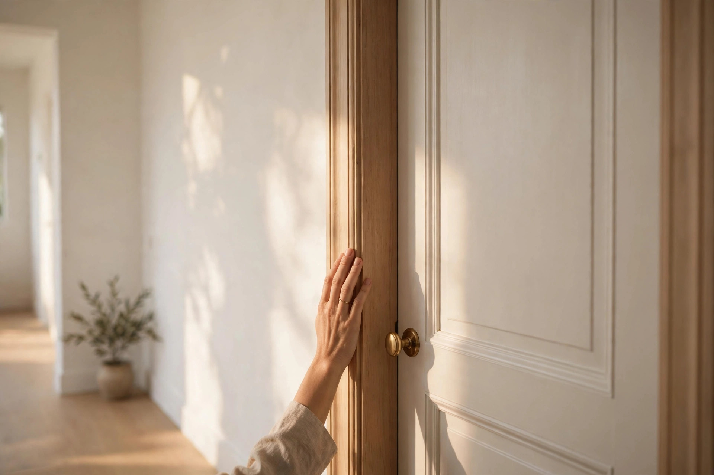

When Your Teen Slams the Door: A Calm Parent's Playbook

There's a particular sound that ends a hundred thousand arguments: the slam. It shakes the wall, it shakes the dog, and it definitely shakes you. Your teenager is now behind a closed door, furious, and you're standing in the hallway with your own pulse in your ears, deciding what to do next.
Here's the uncomfortable truth about that moment: what you do in the next 60 seconds matters more than what you say tomorrow. Teen brains are still running on a half-built impulse-control system — the prefrontal cortex isn't finished until the mid-twenties — so they process conflict through the more reactive parts of the brain, and teens often read neutral words as attacks. Knowing that explains why arguing through the door has never once worked.
The first 60 seconds: what to do
You don't need a speech. You need a procedure — something your hands and mouth can do while your nervous system is screaming. Here it is:
- Stop where you are. Do not follow them down the hallway or yell through the door. Getting into a power struggle mid-anger is a fight you'll lose.
- Take one slow breath. Just one real exhale — you're regulating yourself so you don't hand them a second problem.
- Say one line, at normal volume, from where you are. Try: "We'll talk about this when we're both calm." That's it — no lecture, no consequence announcement, no "don't you walk away from me."
- Walk away and do something ordinary. Make tea. Fold laundry. Put dinner on. You're showing that the house hasn't collapsed because someone is upset in it.
- Return in 20 to 60 minutes, quietly. Knock once and offer something small and physical — water, a snack. Underfed and overstimulated is where emotional disasters live. Low-pressure presence beats interrogation every time.
What not to do: the backfire table
The internet is full of door-slamming advice written for eight-year-olds — as of 2026, that's still most of what's ranking. Teens are not eight-year-olds, and tactics that work on a third-grader can detonate with a fifteen-year-old:
| The move | Why it feels right | What actually happens with a teen |
|---|---|---|
| Remove the door or declare it stays open | "They don't get privacy they abuse" | Turns a fight about words into a fight about dignity. Privacy is developmental for teens, not a perk — taking the door escalates instead of correcting. |
| Argue through the door | "I'm not letting them have the last word" | You get a shouting match with drywall. Nobody hears anything, and the original issue is now buried under three new ones. |
| Demand an apology on the spot | "Respect matters" | An apology extracted from a flooded nervous system is worthless, and now you've taught them apologies are a power move. |
| Ignore it completely, forever | "Don't reward the behavior" | The slam becomes the only tool that works. Unaddressed, it repeats — louder next time. |
The next-day repair conversation
Parents of teenagers eventually learn to accept something uncomfortable: they will be angry with you over things that don't make sense. A cancelled plan, a tone of voice — any of it can cause an outburst no matter how carefully you phrase it. Accepting that takes the panic out of the slam. Stay level, and remind them that planning ahead helps next time.
The repair doesn't happen the same night. It happens the next day, calmly, and it has four parts:
- Name what happened, without the replay. "Yesterday you slammed the door after we argued about the curfew." One sentence. No minute-by-minute reconstruction.
- Ask what they needed. "What were you feeling right before you walked off?" You're not agreeing with the slam — you're showing them the feeling had a name and a legal way out.
- State the standard, once. "You can be furious. You can walk away. Slamming the door isn't okay in this house." Then stop. The standard is a fence, not a speech.
- Agree a signal. "Next time you're that heated, what could you say instead of slamming? 'I need ten minutes' works." Giving them an exit phrase replaces the door as the exit tool.
When the slam means something bigger
Occasional door-slamming is normal teenage weather. But some patterns deserve a closer look. Pay attention if the slamming comes with: damage to walls or doors, slammed doors most days of the week, aggression toward people or pets, or withdrawal that lasts for days. Those aren't discipline problems — they're signals worth talking about with a counselor, pediatrician, or other qualified professional. This guide is general information, not professional advice; if you're worried about your teen's wellbeing, get a real person involved.
FAQ
Should I take their door off its hinges?
No — not for a teenager. The open-door tactic topping the search results was
built for an 8-year-old who slams doors to control the room. Apply it to a
fifteen-year-old and you're no longer correcting a behavior — you're starting
a second fight.
What if they slam the door every single day?
Daily slamming is a pattern, not an incident. That usually means the current
conflict-resolution system in your house isn't working for one of you — often
both of you. That's repair-conversation territory, and if it persists, it's
worth looping in a family counselor rather than inventing new punishments.
Do I address it in the moment at all?
One calm line — "we'll talk when we're both calm" — then walk away. Save the
actual conversation for later, when both nervous systems are back online. A
calm talk after the anger has passed is where consequences and repair actually
land.